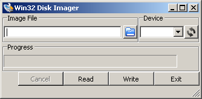

Latest slides available at: http://beagleboard.org/beagleboard101
This is your introduction to the BeagleBone where you will learn:
BeagleBoard.org is an open hardware project featuring two designs:
BeagleBoard.org designs have a common philosophy:

